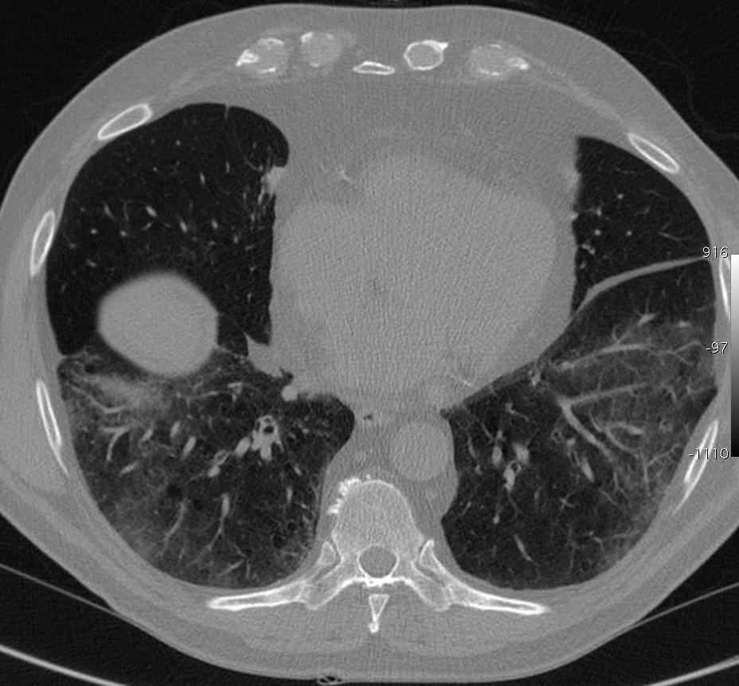

Ficha del catálogo
Neumonía intersticial no específica
- Sistema
- Respiratorio
- Modalidad
- TC
- Región
- Tórax
- Dificultad
- Avanzado
Patrón de enfermedad intersticial difusa con inflamación y fibrosis homogéneas del intersticio. Se asocia con frecuencia a enfermedades del tejido conjuntivo, a fármacos y a exposiciones, aunque también existe una forma idiopática. Su reconocimiento importa porque el pronóstico y la respuesta al tratamiento son mejores que en el patrón de neumonía intersticial usual.
Técnica
Tomografía de alta resolución sin contraste en inspiración máxima, con serie en decúbito prono para separar los cambios reales de los gravitacionales.
Qué observar
- Vidrio deslustrado bilateral y simétrico de predominio basal
- Reticulación fina superpuesta al vidrio deslustrado
- Bronquiectasias y bronquiolectasias de tracción
- Respeto de la franja subpleural inmediata en una parte de los casos
- Panalización escasa o ausente
- Pérdida de volumen de lóbulos inferiores en las formas fibrosantes
Hallazgos
Vidrio deslustrado y reticulación fina bilaterales y simétricos en bases, con bronquiectasias de tracción y sin panal significativo.
Perlas
El respeto de la franja subpleural inmediata es un dato muy útil a favor de este patrón. Cuando aparece en una mujer joven conviene buscar de forma activa una enfermedad del tejido conjuntivo, sobre todo esclerosis sistémica.
Diagnóstico diferencial
- Neumonía intersticial usual
- Panal subpleural en hileras con gradiente basal marcado.
- Neumonitis por hipersensibilidad
- Predominio en campos medios con nódulos centrolobulillares y atrapamiento.
- Neumonía organizada
- Consolidaciones periféricas migratorias con halo invertido.
Simuladores
- Cambios declives en decúbito supino
- Edema intersticial leve
- Infección subaguda en resolución
Por modalidad
- RX
- Opacidades reticulares basales inespecíficas con pérdida de volumen
- TC
- Define el patrón y su distribución, base del diagnóstico multidisciplinario
Protocolo
Alta resolución en inspiración y en prono, sin contraste, con reconstrucciones sagitales y coronales.
Clasificación
Se describen formas con predominio celular, de mejor pronóstico, y formas con predominio fibrosante, con más reticulación y bronquiectasias de tracción.
Errores frecuentes
- Diagnosticar fibrosis basal sin serie en prono
- Ignorar los signos indirectos de enfermedad del tejido conjuntivo como el esófago dilatado
- Etiquetar como patrón usual una fibrosis sin panalización real

neumonia intersticial no especifica vidrio deslustrado reticulacion tejido conjuntivo alta resolucion